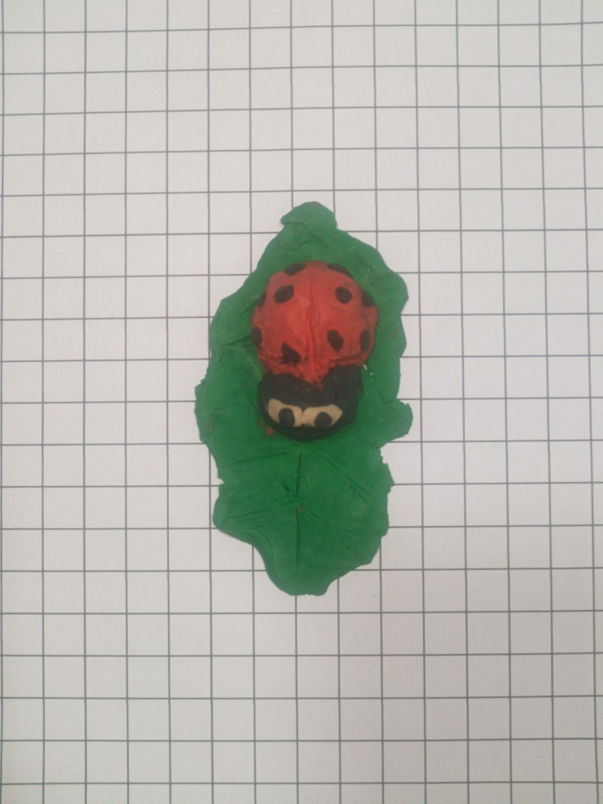
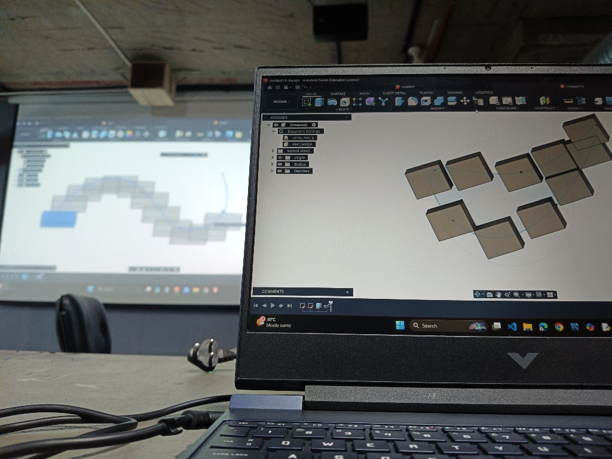
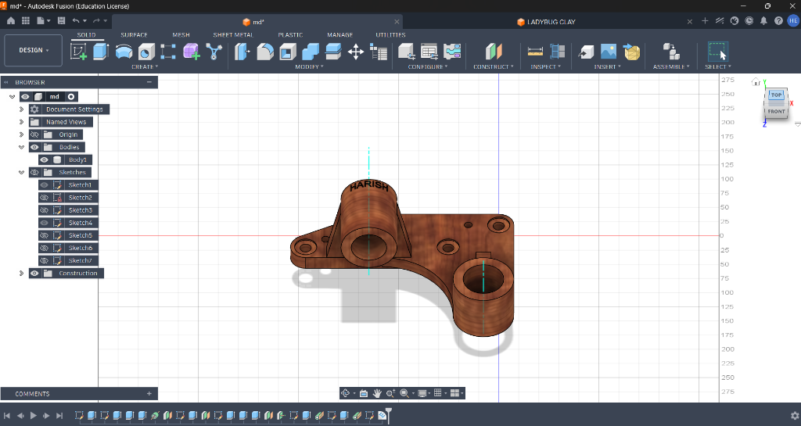
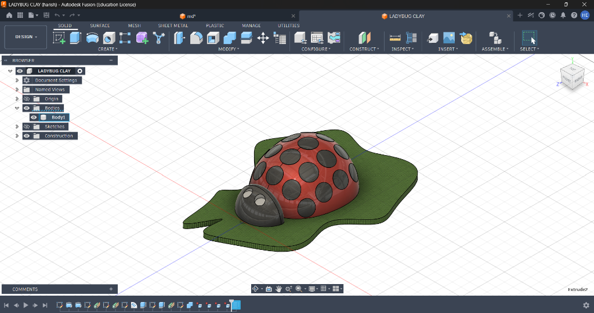

Basic Electronics & Fusion 360
Overview
Week 3 introduced me to the basics of electronics and 3D modelling using Autodesk Fusion 360. During the electronics sessions, I learned foundational concepts such as power, voltage, current, transformers, transistors, and capacitors. I also gained a basic understanding of the Base, Collector, and Emitter terminals of a transistor and how components work together in practical setups.
In the second part of the week, I was introduced to Autodesk Fusion 360. After installing the software and exploring its interface, I started learning basic 3D modelling tools. I completed a Fusion 360 assignment where a 2D sketch was provided to create a 3D mechanical component, helping me understand how 2D designs are converted into 3D models.
Additionally, after completing my clay modelling activity, I tried modelling a ladybug in Fusion 360 inspired by my clay model. This gave me an opportunity to experiment with more organic shapes and curved forms in a CAD environment.
Objectives
- Understand the basics of electricity and electronics.
- Learn about power, voltage, current, transformers, transistors, and capacitors.
- Understand the Base, Collector, and Emitter terminals of a transistor.
- Get familiar with Autodesk Fusion 360.
- Develop basic 3D modelling skills.
Activities
- Basic Electronics: Learned the fundamentals of power, voltage, current, transformers, capacitors, and transistors. Also learned about the Base, Collector, and Emitter terminals of a transistor.
- Electronics Setup: Observed and understood basic electronic setups and how different components are used together.
- Fusion 360 Introduction: Installed Autodesk Fusion 360 and explored its interface and basic modelling tools.
- Fusion 360 Mechanical Component Assignment: Completed a Fusion 360 assignment where a 2D sketch was provided as the basis for creating a 3D mechanical component. The activity helped me understand how a 2D sketch can be used as the starting point for developing a 3D model in Fusion 360.
- Ladybug Modelling: After completing my clay modelling activity, I tried something different in Fusion 360 by modelling a ladybug based on my clay model. This helped me experiment with organic shapes, curved surfaces, and 3D forms.
Skills Learned
Concepts Learned
Key Learnings
- Learned the basic concepts needed to understand electronic components.
- Understood the basic terminals and working idea of a transistor.
- Learned how a 2D sketch can be used as the basis for a 3D model in Fusion 360.
- Gained experience using Fusion 360 through an assignment.
- Explored organic 3D modelling by creating a ladybug based on my clay model.
Event Gallery

Clay Ladybug Model

Fusion 360 Modelling Activity

Fusion 360 Mechanical Component Assignment

Fusion 360 Ladybug 3D Model